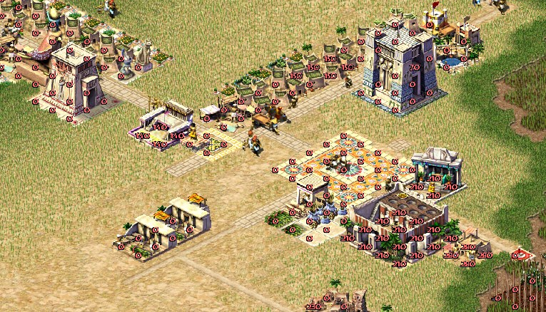
In Pharaoh, the road from simple huts to luxurious estates adorned with frescoes and columns isn't just a matter of architecture and different textures. It reflects how well the player looks after their virtual city — its needs, its faith and its safety. Every dwelling in the city is an FSM that reacts to the conditions around it: enough food, access to water, religious rites, cultural pleasures and a whole lot more.
As soon as you start meeting your citizens' increasingly varied needs, their homes begin to change — sometimes imperceptibly, sometimes rapidly. This system sits at the very heart of the game, just as it did in the previous game of the series: houses influence each other and the buildings next to them, and behind the simple visual side — a couple of textures per house level — hides an intricate simulation that makes every block of the city unique.
In this article I'll try to explain how house evolution works, what requirements stand behind each level of housing, and how it was implemented in the original game. If you happened to miss the last meeting of our priestly circle... sorry, I mean the previous articles about restoring the source code of this old city-builder, do find the time to look through them for a couple of interesting bits (Welcome to Ancient…, ECS, dynvtbl, logical threads and Pharaoh, How to build a mastaba, How the map is drawn in Pharaoh, A new home for Pharaoh)
All the screenshots in this article were taken with the project's own renderer, the sources are on github
Theory without code
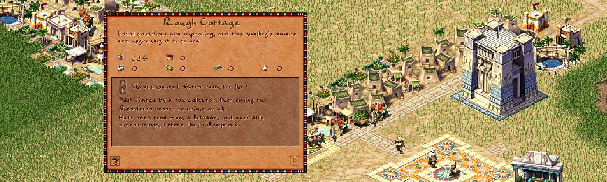
Your subjects always want something: grain, beer, a place to pray... Naturally, needs are an integral part of the game and of the city's life cycle — it's a city-builder, after all. Needs turn into concrete benefits: contented residents pay more taxes, riot less often and are in no hurry to set their neighbours' houses on fire (the rioters mechanic). Under such conditions the city prospers, and the statues in your honour reach up towards the sun god Ra.
Every satisfied need should trigger some piece of game logic — be it higher stability, taxes, or room for new residents. I don't know what these mechanics were called in the original game; from my correspondence with Simon Bradbury, the tech lead of the original Caesar 3, I gathered that he calls them properties, or attributes. These properties add up to a coherent system that demands strategic thinking and planning on the scale of the whole city, and mistakes are punished by a fairly swift exodus of the population, off somewhere towards the matzah and the promised land.
In Caesar/Pharaoh/Zeus these attributes were hidden from the player behind text along the lines of "Needs a temple, no clean water, or the granary is a nuisance". This was a hallmark of the series and made it possible to implement a seemingly complex mechanic (no explicit numbers) with interactions between buildings and land desirability. But on the inside the system turned out to be surprisingly simple.
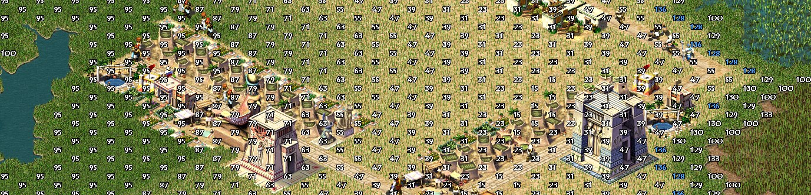
Things like income, happiness (desirability of the land) and population were already present in earlier games of the series. As usual, choosing which needs to satisfy first and which extra ones to fulfil for bonuses is part of the puzzle of growing a city. A puzzle is exactly what it is: the original levels were designed so that the player would find an efficient solution for a limited set of resources — the vanilla levels of both Caesar and Pharaoh were built precisely as resource puzzles with a limited set of pieces.
The main parameters of houses are population, the resources they consume and the services provided by various buildings, and they grow mostly by satisfying a house's needs — that is, by placing buildings that provide those services nearby. The way parameters work came straight over from Caesar: if you provide the residents of first-level houses with food and access to clean water, then every such well-supplied dwelling already gives a population bonus and the ability to earn income, provided you build a tax collector.
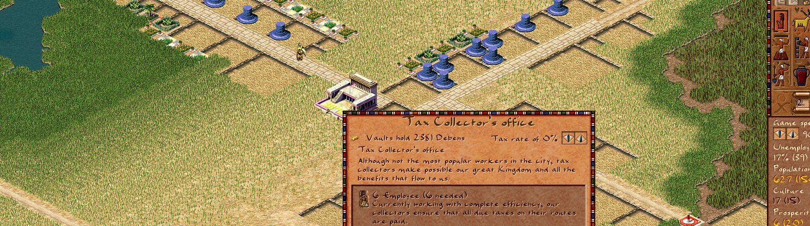
Mind you, the game only shows the amount of goods currently stored in the house and a description of what the building lacks to move up a level.
A bit more theory
But it's not just about happiness, income and population. The group of attributes also includes fire safety, healthcare and a number of other parameters tied to features that unlock as you progress through the missions. They're all measured by numbers too, but the player never sees them at all; the screenshots below show how a building's fire risk is presented through an overlay, and how it actually exists in the game.
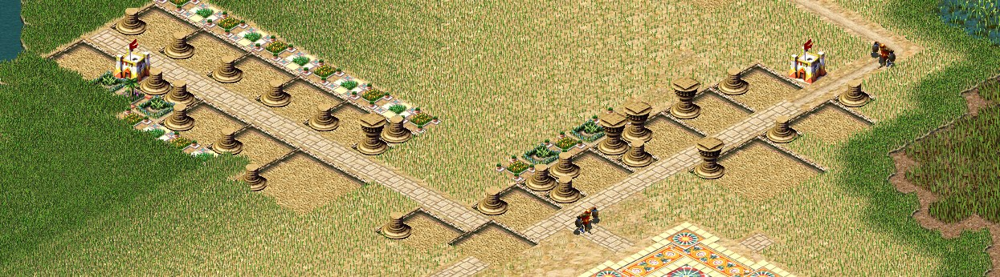
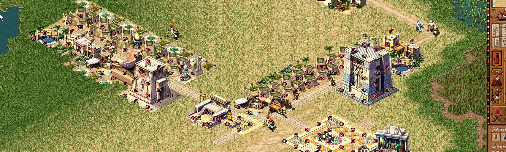
In the original game the list of overlay layers wasn't very long, but I managed to recover more of them — apparently the authors didn't consider them important or didn't get them finished in time for release.
A wide set of attributes tied to the needs system gives a lot of freedom, both in designing the connections themselves and in terms of near-endless replayability and the many ways attributes can be combined, letting the player pick exactly the solutions that best fit their management style or the current state of affairs on the map.
Overlays
enum e_overlay {
OVERLAY_NONE = 0,
OVERLAY_WATER = 2,
OVERLAY_RELIGION = 4,
OVERLAY_FIRE = 8,
OVERLAY_DAMAGE = 9,
OVERLAY_CRIME = 10,
OVERLAY_ENTERTAINMENT = 11,
OVERLAY_BOOTH = 12,
OVERLAY_BANDSTAND = 13,
OVERLAY_PAVILION = 14,
OVERLAY_SENET_HOUSE = 15,
OVERLAY_EDUCATION = 16,
OVERLAY_SCRIBAL_SCHOOL = 17,
OVERLAY_LIBRARY = 18,
OVERLAY_ACADEMY = 19,
OVERLAY_APOTHECARY = 20,
OVERLAY_DENTIST = 21,
OVERLAY_PHYSICIAN = 22,
OVERLAY_MORTUARY = 23,
OVERLAY_TAX_INCOME = 24,
OVERLAY_FOOD_STOCKS = 25,
OVERLAY_DESIRABILITY = 26,
OVERLAY_WORKERS_UNUSED = 27,
OVERLAY_NATIVE = 28,
OVERLAY_PROBLEMS = 29,
/// this is where the original's visible overlays ended
/// but there were others too, and I haven't pulled them all out yet
OVERLAY_RELIGION_OSIRIS = 30,
OVERLAY_RELIGION_RA = 31,
OVERLAY_RELIGION_PTAH = 32,
OVERLAY_RELIGION_SETH = 33,
OVERLAY_RELIGION_BAST = 34,
OVERLAY_FERTILITY = 35,
OVERLAY_BAZAAR_ACCESS = 36,
OVERLAY_ROUTING = 37,
OVERLAY_HEALTH = 38,
OVERLAY_LABOR = 39,
OVERLAY_COUTHOUSE = 40,
OVERLAY_BREWERY = 41,
OVERLAY_LABOR_ACCESS = 42,
OVERLAY_SIZE
};There really are a lot of parameters, and to let the player see a fuller picture of the map's state the game used so-called overlays, which visualise the various parameters on the map, as in the two screenshots above. They help you quickly understand what affects a given indicator and, for example, fix poor fire safety by rebuilding a district or adding new buildings. Drawing overlays is a separate topic, an interesting one too, but it digs deep into the renderer and is beyond the scope of this article; if anyone's interested, I'll write about it separately.
Solving the needs puzzle plays a key role in growing the city's population and completing the level: every attribute a residential building provides depends directly on which of its needs are met — a formula that had already been tried out in Caesar and proved itself well. Higher-level needs give higher attribute values — both directly (through the house level going up) and indirectly: new needs require new buildings, which usually require new resources, which require yet other buildings that produce those resources — hidden production chains of a sort.
The code
The house evolution FSM lives (for now) in building_house.cpp (https://github.com/dalerank/Akhenaten/blob/master/src/building/building_house.cpp)
The FSM's work is split into several parts: consuming food, goods and services, and the actual upgrading or downgrading of the house level. Since the engine does almost no memory allocations, all of this runs pretty briskly on large maps in a single thread. For some of the data I never managed to figure out what it was for, so it's marked something like unused.unknown_00c0
void city_resources_t::consume_food(const simulation_time_t& t) {
calculate_available_food();
g_city.unused.unknown_00c0 = 0;
resource_list consumed_food;
buildings_house_do([&] (building_house *house) {
resource_list consumed = house->consume_food();
consumed_food.append(consumed);
});
res_this_month.consumed.append(consumed_food);
}
void city_resources_t::consume_goods(const simulation_time_t& t) {
if (t.day == 0 || t.day == 7) {
resource_list consumed_goods;
buildings_house_do([&] (building_house *house) {
auto house_consumed = house->consume_resources();
consumed_goods.append(house_consumed);
});
res_this_month.consumed.append(consumed_goods);
}
}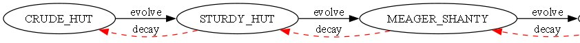
Originally, the dug-out sources contained one enormous sausage of ifs, and even the tidied-up version ran to something like eight hundred lines. Either the compiler unrolled the original sources like that — which is doubtful, since the engine was written in '98 and optimising compilers weren't in wide use yet — or that was the original design. Either way, it is what it is.
Archaeology
if (state == HouseState::CRUDE_HUT) {
if (status == e_house_evolve)
change_to(BUILDING_HOUSE_STURDY_HUT);
} else if (state == HouseState::STURDY_HUT) {
if (status == e_house_evolve)
change_to(BUILDING_HOUSE_MEAGER_SHANTY);
else if (status == e_house_decay)
change_to(BUILDING_HOUSE_CRUDE_HUT);
} else if (state == HouseState::MEAGER_SHANTY) {
if (status == e_house_evolve)
change_to(BUILDING_HOUSE_COMMON_SHANTY);
else if (status == e_house_decay)
change_to(BUILDING_HOUSE_STURDY_HUT);
} else if (state == HouseState::COMMON_SHANTY) {
....I had to clean this logic up for a long time to get a readable version, and in the end it all boiled down to a smaller switch like this:
Readable version
enum HouseState {
CRUDE_HUT,
STURDY_HUT,
MEAGER_SHANTY,
COMMON_SHANTY,
ROUGH_COTTAGE,
// ...
PALATIAL_ESTATE
};
struct House {
HouseState state;
house_demands* demands;
bool evolve() {
if (house_population() <= 0)
return false;
merge(); // Always happens if pop > 0
auto status = check_requirements(demands);
if (has_devolve_delay(status))
return false;
switch (state) {
case HouseState::CRUDE_HUT:
if (status == e_house_evolve)
change_to(BUILDING_HOUSE_STURDY_HUT);
break;
case HouseState::STURDY_HUT:
if (status == e_house_evolve)
change_to(BUILDING_HOUSE_MEAGER_SHANTY);
else if (status == e_house_decay)
change_to(BUILDING_HOUSE_CRUDE_HUT);
break;
// ... continue for each state ...
case HouseState::FANCY_RESIDENCE:
if (status == e_house_evolve && can_expand(9)) {
expand_to_common_manor();
map_tiles_gardens_update_all();
return true;
} else if (status == e_house_decay)
change_to(BUILDING_HOUSE_ELEGANT_RESIDENCE);
break;
// ...
default:
break;
}
return false;
}
};Later still, all the logic was split into separate implementations, where something resembling a structure began to show through — one you can now edit without tears. There's still a fair amount of copy-paste in there, but I haven't had time to untangle it any further.
bool building_house_elegant_manor::evolve(house_demands* demands) {
if (house_population() <= 0) {
return false;
}
e_house_progress status = check_requirements(demands);
if (has_devolve_delay(status)) {
return false;
}
if (status == e_house_evolve) {
change_to(base, BUILDING_HOUSE_STATELY_MANOR);
} else if (status == e_house_decay) {
change_to(base, BUILDING_HOUSE_SPACIOUS_MANOR);
}
return false;
}To move up to the next level, a house has to check whether various conditions are met, and the higher the house level, the more services it needs. These checks are fairly simple, so they can be run often without worrying about fps. The authors of the original game (bear in mind the game had to run on 200-megahertz monsters — the author of this article first played the OG on an AMD K6 at 266 MHz (Super Socket 7, if memory serves) and had to turn the city speed down because everything ran too fast) did this check once per game day for all the houses on the map at once, which made house updates look somewhat robotic in the early stages of the game, while the city is still small.
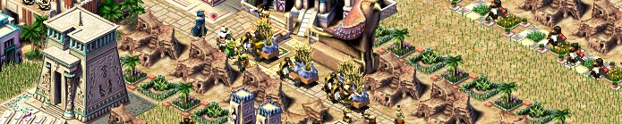
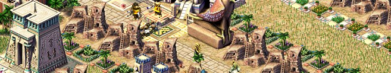
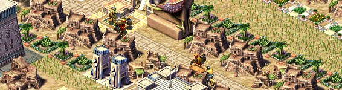
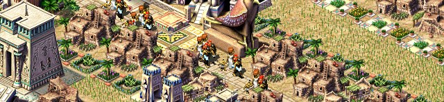
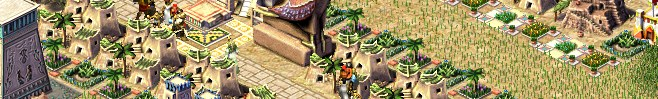
+--------------------------+ +-----------------------------+
| Start & house_level | +----> | Religion checks: |
| if for_upgrade: ++level | | | - num_gods vs requirement |
+--------------------------+ | | - update demands->missing |
| | | - update demands->requiring |
v | +-----------------------------+
+--------------------------+ | |
| Load model for level | | v
| model = model_get_house | | +-----------------------------+
+--------------------------+ | | Health services: |
| | | - dentist, magistrate |
v | | - health level check |
+--------------------------+ | | - update demands->missing |
| Water access: | | | - update demands->requiring |
| - needs fountain or well | | +-----------------------------+
| - update demands->missing| | |
+--------------------------+ | v
| | +-----------------------------+
v | | Food types available |
+--------------------------+ | | - count types |
| Entertainment & Education| | | - if < required: missing |
| - check d.entertainment | | +-----------------------------+
| - check d.education | | |
| - update demands->missing| | v
+--------------------------+ | +----------------------------+
| Goods check: | | |
| | | - pottery, linen, jewelry |
+--------->>>>>>------| | - beer and wine |
| - update demands if miss |
+----------------------------+
|
v
+--------------------------+
| Return e_house_evolve |
| (if all passed) |
+--------------------------+And if the little house was ready for an upgrade, that's when the texture change kicked in, along with merging neighbouring 1-tile houses into one big 2x2 house.
A bit more code
Even in a game this old, the developers put a lot of attention into a relatively realistic model of how a house functions, one that took many parameters into account. Six more of them I couldn't recover, since no code in the original game ever touched those addresses — perhaps it was something for debugging.
This is the set of parameters a single house works with every frame
struct runtime_data_t : no_copy_assignment {
//e_house_level level;
uint16_t foods[8];
uint16_t inventory[8];
uint16_t highest_population;
uint16_t unreachable_ticks;
uint16_t last_update_day;
building_id tax_collector_id;
uint16_t population;
int16_t tax_income_or_storage;
uint8_t is_merged;
uint8_t booth_juggler;
uint8_t bandstand_juggler;
uint8_t bandstand_musician;
uint8_t pavillion_musician;
uint8_t pavillion_dancer;
uint8_t senet_player;
uint8_t magistrate;
uint8_t bullfighter;
uint8_t school;
uint8_t library;
uint8_t academy;
uint8_t apothecary;
uint8_t dentist;
uint8_t mortuary;
uint8_t physician;
uint8_t temple_osiris;
uint8_t temple_ra;
uint8_t temple_ptah;
uint8_t temple_seth;
uint8_t temple_bast;
uint8_t no_space_to_expand;
uint8_t num_foods;
uint8_t entertainment;
uint8_t education;
uint8_t health;
uint8_t num_gods;
uint8_t shrine_access;
uint8_t devolve_delay;
uint8_t bazaar_access;
uint8_t fancy_bazaar_access;
uint8_t water_supply;
uint8_t house_happiness;
uint8_t criminal_active;
uint8_t tax_coverage;
uint8_t days_without_food;
uint8_t hsize;
uint8_t unknown_00;
uint8_t unknown_01;
uint8_t unknown_02;
uint8_t unknown_03;
uint8_t unknown_04;
uint8_t unknown_05;
building_id worst_desirability_building_id;
xstring evolve_text;
};Once all the parameters are right for an upgrade, there's very little left to do to change the texture. I've already written about implementing a vtable in plain C here, but there's one more interesting point here — this lineauto &d = (building_house::runtime_data_t)b.runtime_data;
refers to a shared data buffer that is common to every building type in the game, but which is turned into the concrete data the existing building operates on.
building g_all_buildings[5000];
class building {
public:
enum { max_figures = 4 };
using ptr_buffer_t = char[24];
private:
ptr_buffer_t _ptr_buffer = { 0 };
class building_impl *_ptr = nullptr; // dcast
public:
e_building_type type;
animation_context anim;
std::array<figure_id, max_figures> figure_ids;
char runtime_data[512] = { 0 };A rather elegant solution for its time: it gave you a semblance of virtual dispatch and let you write overloaded functions for each building type (update, draw, handle etc.) while keeping the speed of pure C. The Pharaoh engine hadn't yet been fully moved to C++, as was done in Zeus, where you can already see mangled class and struct names, but it wasn't pure C either, as Caesar was.
The downside of this shared-cache approach was that you couldn't store more than 512 bytes in the cache for a particular building, but I suspect that was far more than the classes actually needed. Today you might call a pattern like this runtime_data, where data for different structures is created in a pool of equal-sized slots — except that here we end up carrying that pool around with us all the time.
Even the heaviest class, the one describing pyramids — or rather its cache — took up only 234 bytes. In the original game the building structure takes 836 bytes, which with a static array of 5000 buildings came to ~4.2 MB of RAM; given that the game came out in 1999, when the average was around 64 MB on ordinary systems and 128 MB on gaming ones, that should have been enough for a very large city. Unfortunately I haven't got to the pyramids yet, but you can already build mastabas, and their logic is practically the same.
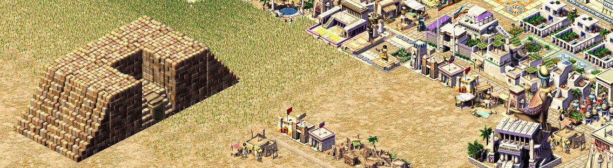
Few maps ever got built up with that many buildings. The upside of this approach is that this chunk of memory can simply be saved and loaded without worrying about serialization. And in general, the more I analyse the game's reverse-engineered sources, the more convinced I become that it was written by geniuses at the very least, who managed to cram an excellent city-builder into such tight limits (the game ran on a minimum of 32 MB — textures included).
Back to updating the texture. This code is already C++ and mine, but most of the logic is still preserved. In particular, the hardcoded texture offsets for merged and single houses are still there.
void building_house::change_to(building &b, e_building_type new_type) {
auto &d = *(building_house::runtime_data_t*)b.runtime_data;
const int house_update_delay = std::min(house_up_delay(), 7);
const int absolute_day = game.simtime.absolute_day(true);
const bool can_update = (absolute_day - d.last_update_day < house_update_delay);
if (house_update_delay > 0 && (new_type > b.type) && can_update) {
return;
}
b.clear_impl(); // clear old impl
b.type = new_type;
auto house = b.dcast_house();
int image_id = house_image_group<false>(house->house_level());
const int img_offset = house->anim(animkeys().house).offset;
if (house->is_merged()) {
image_id += 4;
if (img_offset) {
image_id += 1;
}
} else {
image_id += img_offset;
image_id += map_random_get(b.tile) & (house->params().num_types - 1);
}
map_building_tiles_add(b.id, b.tile, b.size, image_id, TERRAIN_BUILDING);
d.last_update_day = game.simtime.absolute_day(true);
}
And this line is responsible for the random textures of single houses, so the city doesn't look completely uniform.
image_id += map_random_get(b.tile) & (house->params().num_types - 1);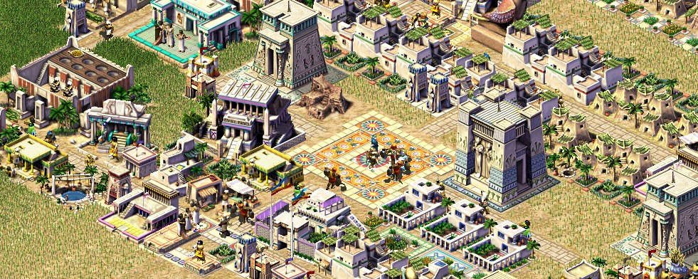
Conclusion
That wraps up the story of attributes — a system that for many years became the benchmark of the city-builder genre and was developed further in games many people know: Stronghold, Anno, Patrician. If anyone is gripped by nostalgia for the old city-builder, come over to github or itch.io — the sources are open, and the first 8 missions are playable. The project's goal is to restore the original game (without preserving the authenticity of the sources, as the Julius project does) and make it possible to play it on new platforms and develop it further with mods and graphics packs.
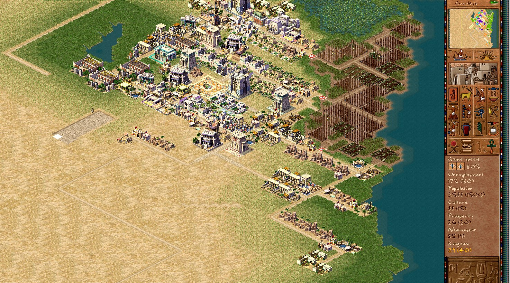
All articles